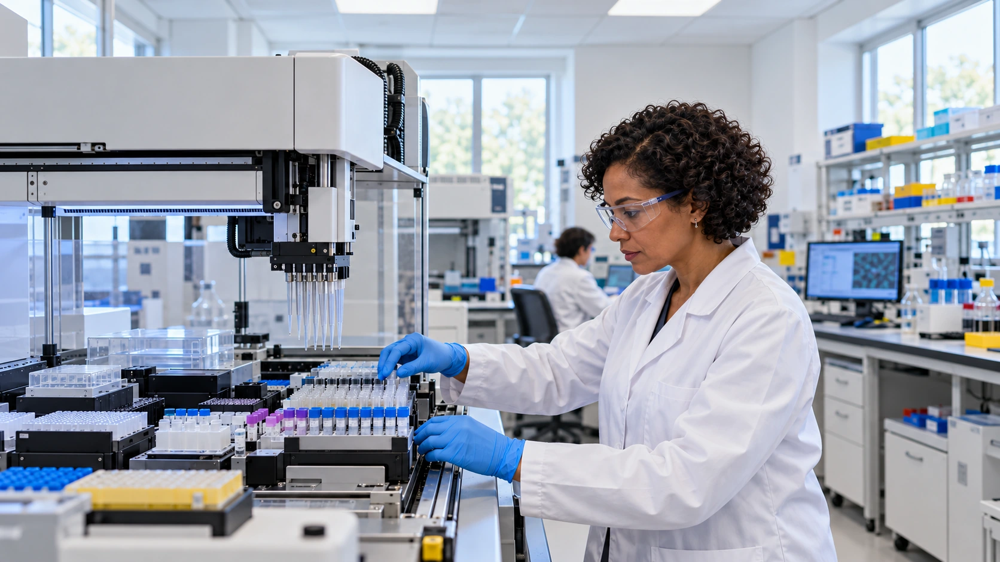

Britain backs an AI biosecurity lab with £100 million, plus company model credits
The new nonprofit will target biological-threat detection and medical research. OpenAI and Anthropic pledge up to £200 million in additional support.

Britain is establishing an AI Biosecurity Lab with £100 million in government funding, seeking to turn increasingly powerful artificial intelligence into earlier warnings of biological threats and faster research on medical countermeasures. The October 24 announcement adds up to £200 million in commitments from OpenAI and Anthropic. That second figure consists of access to computing, models and support, rather than an equivalent cash contribution to the laboratory.
The distinction is central to understanding the package. Public funding can support the institution’s development, while company credits provide specified technological resources. Their usefulness depends on access terms and the work they can support. Adding the figures produces an envelope of up to £300 million, but describing that entire amount as government spending, cash already transferred or laboratory construction would misstate what has been announced.
Two research priorities, with operating details still to come
The Cabinet Office says initial work will concentrate on earlier detection of emerging biological threats and faster development of vaccines, treatments and other countermeasures. The organization will be an independent nonprofit with a scientific advisory committee. These are its intended functions and structure. They are not evidence that a particular detection system or treatment has already been validated, deployed or shown to improve an outbreak response.
The Next Web noted that the announcement did not identify a director, a location or an operating start date. That leaves meaningful implementation questions between the funding announcement and a working institution. Recruitment, research partnerships and usable evaluation methods will help determine whether model access becomes practical scientific capability. Readers should distinguish the creation of an organization from an opening ceremony at a completed physical laboratory.
Company support has a defined form
OpenAI’s contribution is £100 million in compute and model credits, alongside trusted model access through its Rosalind Biodefense programme. Anthropic’s commitment is up to £100 million in model credits, trusted access and technical support. OpenAI describes Rosalind Biodefense as a route for qualified developers and government partners to build defensive applications. Those access conditions matter: this is support for vetted research, rather than an unrestricted public release of advanced biological capabilities.
Google DeepMind, part of Alphabet, and Britain’s Basecamp Research are also named as research partners. Their participation broadens the technical relationships around the new lab, but it does not make every collaboration interchangeable with cash funding. Our report on AI drug developer Pathos shows a related distinction between financing a company, gaining access to research data and demonstrating that an approach produces useful scientific results.
The Treasury places the lab inside a £165 million National AI Biosecurity Initiative. That includes the £100 million lab allocation and a separate £65 million for biological surveillance and medical countermeasures. The lab’s £100 million therefore should not be added again to that £165 million total. The wider announcement separately allocates another £120 million to the AI Security Institute, an institution with a different testing and research role.
Useful performance measures come after the funding headline
A practical evaluation of the lab would need to distinguish quicker analysis from better decisions. For a threat-detection project, a useful question is whether a system finds a relevant signal early enough to change an authorized response without overwhelming specialists with false alarms. For research support, the useful output is work that survives scientific checks, not simply a greater volume of generated suggestions. These are evaluation priorities, not results claimed for an existing AIBL system.
Our guide to AI inference economics explains why access to computing is only one part of an operating model. Skilled people, integration and verification also consume resources. Likewise, research access and data controls remain relevant even where models come through a trusted programme. An institution needs clear responsibility for the information it uses and the outputs it accepts.
The announcement creates a substantial opportunity to connect AI expertise with public-interest biological research. Its progress will be clearer when leadership, operating arrangements and specific research evaluations are disclosed. The immediate development is a funded institutional plan with significant company support. Its ultimate value will depend on the capabilities that researchers can demonstrate and public-health partners can actually use.
Sources and methodology
Sources checked October 25, 2026. Reported findings and company or regulatory statements are attributed in the text; discussion of financial implications is editorial analysis. The generated cover is illustrative.